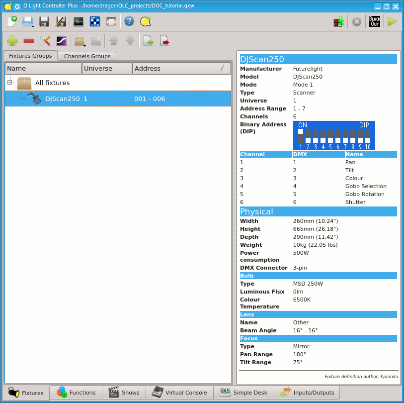
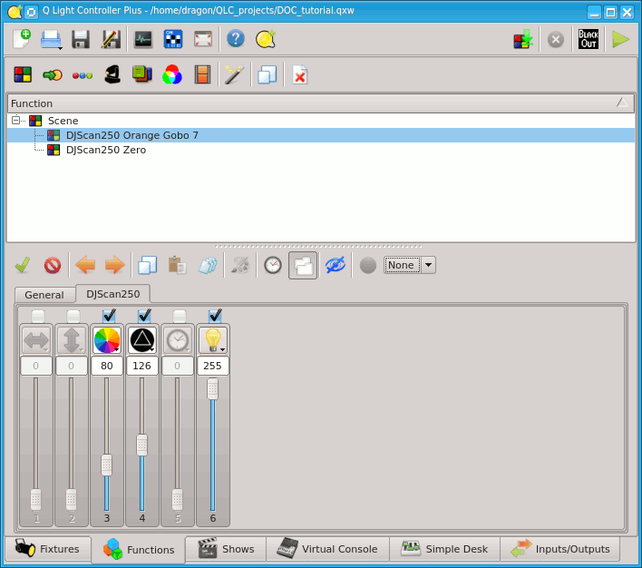
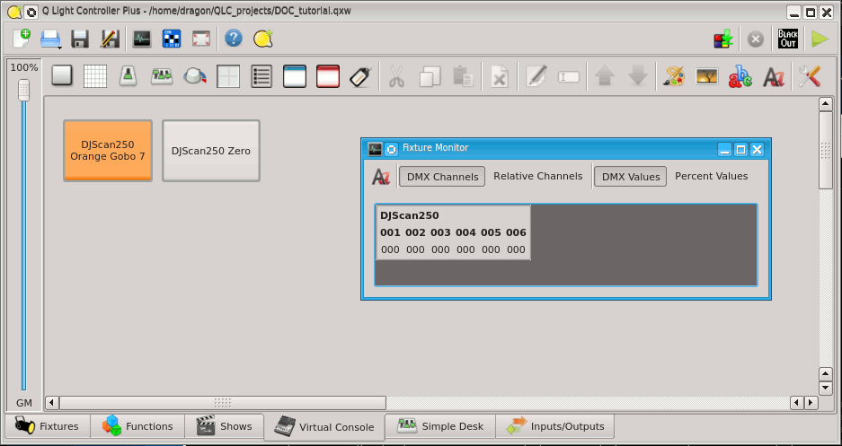

をクリックするとフィクスチャーマネージャーが開きます。
をクリックするとフィクスチャーマネージャーが開きます。
このチュートリアルではフィクスチャーを作るところから、シーンやボタンの作成までを扱います。
このチュートリアルを読む前にMain windowなどのページに目を通すことをオススメします。
あとは習うより慣れろです！
このアイコンをクリックするとフィクスチャーマネージャーが開きます。
フィクスチャーマネージャはQLC+の心臓のようにとても重要な概念です。必ず覚えましょう。画面左には現在プロジェクトデータに追加されているフィクスチャーの一覧が表示されています。新規状態では何も表示されません。 画面右には、選択したフィクスチャーの詳細が表示されています。画面上部のツールバーには各種機能を持ったアイコンが表示されています、機能は以下の通りです。
 フィクスチャーの追加
フィクスチャーの追加
 フィクスチャーの削除
フィクスチャーの削除
 選択したフィクスチャーの詳細設定を開きます。
選択したフィクスチャーの詳細設定を開きます。
 選択したフィクスチャーグループを作成します。
選択したフィクスチャーグループを作成します。
 選択したフィクスチャーをグループから外します。
選択したフィクスチャーをグループから外します。
 フィクスチャーリストデータを読み込みます。
フィクスチャーリストデータを読み込みます。
 フィクスチャーリストデータを保存します。
フィクスチャーリストデータを保存します。
アイコンをクリックしてフィクスチャーを追加してみましょう。
ダイアルログ左にQLC+に用意されているフィクスチャーの一覧がメーカー名、機種名でソートされ表示されています。リストからフィクスチャをクリックすると、右側のChannelsフィールドが変更され、選択したフィクスチャに必要なDMXチャンネルの数が表示されます。また、 Channelsボックスの直下にあるフィクスチャのチャンネルのリストもあります。
ここではFuturelight社のDJScan250を追加してみましょう、ウィンドウ上でDJScan250を探し、選択した状態にしておきましょう、ここでまだOKをクリックしないように注意してください。
フィクスチャーの追加ダイアルログからDJScan250を選択し、画面右で詳細を変更しましょう。Nameで灯体を識別しやすいように名前をつけることができます。ご自身でわかりやすい名前にしておけば大丈夫です。Modeからフィクスチャーに応じてモードを選択して下さい。フィクスチャーによってはモード設定ができます、プルダウンメニューから選択できます。今回のDJScan250ではMode1しかないのでそのままで構いません。Addresでフィクスチャーのヘッダーアドレスを設定して下さい。 QLC+では1つのPCから複数の系統の出力ができます、Universeでは出力したいユニバースを指定して下さい。現在の設定を確認するにはは入出力タブをご覧ください。
同じ種類でフィクスチャーが複数台ある場合は数から台数を指定することで一括でプロジェクトデータに追加することができます。また、各フィクスチャーのアドレスが連番になっておらず、間隔が空いている場合はアドレス間隔を調整して下さい。このチュートリアルではそのままにしておきましょう。
DMXのアドレスについてあまり理解していない場合はフィクスチャーのマニュアル等を読んで理解するようにしてください。DMXのヘッダーアドレスについてもう少し詳しく説明していきましょう。多くの場合フィクスチャーはいくつかのチャンネルを使ってコントロールしていきます。例えばDJScan250では6つのチャンネルを組み合わせることで操作します。この時に1つのフィクスチャーのチャンネルの一番初め(小さい) チャンネルのDMXアドレスをそのフィクスチャーのヘッダーアドレスと呼びます。また、フィクスチャーごとにDMXのチャンネルが重ならないようにする必要があるので、今回の場合では7ch以降のアドレスを次のフィクスチャーのヘッダーアドレスとして設定します。この時にフィクスチャー間のチャンネルに間隔を空けるかどうかを設定できますが、特に理由がなければ1のままにしておくことでアドレスを昇順で連番にすることができます。
OKをクリックし、プロジェクトデータに追加します。
画面左のフィクスチャー一覧に無事追加されたと思います。フィクスチャーを選択すると画面右にそのフィクスチャーの詳細が表示されます。この設定を修正したいときはConfigureアイコンをクリックし、ダイアルログを表示させます、また、ダブルクリックでも表示可能です。

画面下部ファンクションタブ をクリックしてファンクションマネージャーを開きましょう。
をクリックしてファンクションマネージャーを開きましょう。
QLC+においてフィクスチャーマネージャーは心臓のように大事な要素でした、ファンクションマネージャーは脳みそのように大事な要素です。ファンクションマネージャーでは照明の動きを追加したり削除したりできます。ツールバーの機能は以下の通りです。
 新規シーンの追加
新規シーンの追加
 新規チェイスの追加
新規チェイスの追加
 新規シークエンスの追加
新規シークエンスの追加
 新規EFXの追加
新規EFXの追加
 新規コレクションの追加
新規コレクションの追加
 新規RGBマトリックスの追加
新規RGBマトリックスの追加
 新規Scriptの追加
新規Scriptの追加
 ファンクションウィザードを開きます。
ファンクションウィザードを開きます。
 選択したファンクションをコピーします。
選択したファンクションをコピーします。
 選択したファンクションを削除します。
選択したファンクションを削除します。
ツールバーの下にはファンクションの一覧が表示されます。 まだファンクションを作っていないので何も表示されていないと思います。
アイコンをクリックして新規シーンを作成しましょう。
フィクスチャーの各チャンネルの出力値をシーンとして保存しておくことが出来ます。画面左にはシーンを含むファンクションの一覧が表示されていきます。シーンを追加/削除、チャンネルの有効化/無効化を切り替えることもできます。
画面右にはチャンネルグループが表示されています。このチュートリアルではこのチャンネルグループ機能については説明しません。
アイコンをクリックして、操作対象のフィクスチャーを選択して下さい。ここでは先ほど追加したDJScan250を追加してOKを押してみましょう。
では、実際にシーンを作っていきましょう。先ほどフィクスチャーを追加したので全般タブの横にフィクスチャー名のDJScan250と名前のついたタブが作られたと思いますDJScan250タブを開いてください。
タブ内には今回は6本のスライダーやボタンが表示されていると思います。シーンに登録したいチャンネルにチェックを入れて下さい。チェックのないチャンネルの値はシーンに記録されません。今回のチュートリアルではスキャナーを扱うので色のチャンネルのみにチェックを入れることで、チャンネルにゴボ、光量、パン、チルトなどの設定には影響を及ぼさずに独立したシーンを作ることができます。
今回チュートリアルでは3,4,6チャンネルにチェックを入れてみます。
チェックを入れるとスライダーのグレーアウトがなくなり、スライダーを動かせるようになります。アイコンをクリックすると、そのチャンネルに割り当てられた機能を簡単に呼び出すことができます。チュートリアルではDJScan250の3chで色、4chでゴボ、6chでシャッターを操作します。
スライダーのほか、3chの色のチャンネルのような段階的に機能が区切られているチャンネルの場合はアイコンをクリックすることで機能が表示され、値を指定することができます。実際にやってみたほうが分かりやすいですね。
3chにあるアイコン をクリックしオレンジ色をクリックしてみて下さい。
をクリックしオレンジ色をクリックしてみて下さい。
するとスライダーが自動的に80のところに移動したと思います、このようにスライダーのほかアイコンをクリックすることで指定できるチャンネルもあります。このチュートリアルでは扱っていませんが、すでに入出力設定で出力が設定され、フィクスチャーと正しく接続されているならば、シーンの作成中の値に合わせて実際のフィクスチャーが動作しているかもしれません、このように実際の様子を見ながらシーンを作っていきます。まだ出力の設定をしていなくてフィクスチャーが動かなくても落ち込まずに先へ進みましょう、このチュートリアルではシーンを作るスキルを手に入れればいいのです。
同様にゴボ を設定していきましょう。今回のチュートリアルではGobo 7を設定しましょう、スライダーが126に自動的に移動します。
光量
を設定していきましょう。今回のチュートリアルではGobo 7を設定しましょう、スライダーが126に自動的に移動します。
光量 もShutter openにしておきましょう、255になります。
もShutter openにしておきましょう、255になります。
これでDJScan250の3chが80、4chが126、6chが255のシーンを作りました。Generalタブをクリックして確認してみましょう。ファンクション一覧に咲く詠したシーンが表示されていますね。
作ったシーンにあなたが分かりやすいような名前をつけましょう。今回はDJScan250 Orange Gobo 7という名前をつけてみます。
このシーンを再生する時にフェードインさせたいならば秒数を設定することで実現できます。
ツールバーからこのアイコン  をクリックするとフェードイン、フェードアウトの時間を設定できます。では試しにフェードインに5と入力してみましょう、自動的に単位のsが入力され5秒のフェードインが設定されます。
をクリックするとフェードイン、フェードアウトの時間を設定できます。では試しにフェードインに5と入力してみましょう、自動的に単位のsが入力され5秒のフェードインが設定されます。
もう一度アイコンをクリックすると時間設定画面を閉じます。
さて、今一度ファンクションマネージャーを見て見ましょう、先ほど作成したDJScan250 Orange Gobo 7といシーンが一覧に表示されたと思います。
ファンクションの上で右クリックしてもツールバーと同じような機能を呼び出すことができます。もちろん別のファンクションを作ることも編集することもできますがこのチュートリアルではどんどん先に進みましょう。
ここで、あとで使いたいのでもう一つだけシーンを作ってみましょう、DJScan250 Zeroという名前で3,4,6ch全てを0にしてシーンを作ってみて下さい。できたら次へ進みましょう。

先ほどフィクスチャーマネージャーとファンクションマネージャーはQLC+における心臓と脳みそぐらい大事なことだと説明しました、次は便利な手足を生やしてみましょう。 QLC+の手足はバーチャルコンソールです。バカな話はここまでにして先ほど作ったDJScan Orange Gobo 7シーンを再生するボタンを作ってみましょう。
画面下部のタブからバーチャルコンソール を表示しましょう。
を表示しましょう。
はじめにバーチャルコンソールを開くとやはり何も表示されていません。 ここにボタンを配置してみましょう。画面上のツールバーから様々なウィジェットを追加したり編集したりしていきますまたバーチャルコンソール上で右クリックしてもツールバーと同様の機能を呼び出すことができます。
では、ツールバーからアイコン をクリックし、ボタンを追加してみます。
をクリックし、ボタンを追加してみます。
バーチャルコンソールにまだ何も機能を割り当てていない空のボタンが現れたと思います。
現れたボタンをダブルクリックするか、一度クリックして選択したあとツールバーからこのアイコン をクリックしてみましょう。
をクリックしてみましょう。
ボタンのプロパティが開きます
* 名前 ボタン名を設定できます。
* ファンクション ボタンに割り当てたいファンクションを設定できます。
* キーボードショートカット ボタンをクリックではなくキーボードのキーに割り当てることでピアノタッチのように物理ボタンとしてコントロールします。
* 外部入力 入出力設定で設定した入力をボタンに割り当てます、MidiコントローラやArt-Net入力等でコントロールします。
* 押された時の動作 ボタンを押したときの動作を選択できます。
このアイコン をクリックして、ボタンに割り当てたいファンクションを設定します。今回は先ほど作ったDJScan Orange Gobo 7シーンをダブルクリックして設定しましょう。
をクリックして、ボタンに割り当てたいファンクションを設定します。今回は先ほど作ったDJScan Orange Gobo 7シーンをダブルクリックして設定しましょう。
必須ではありませんが、ボタン名を設定分かりやすいようにボタン名を設定しても構いません。
OKをクリックしてプロパティの画面を閉じましょう。
ボタン名が長すぎるとボタンに入りきらないので途中で省略されてしまうことがあります。ボタン自体を大きくしたりすると合わせてボタン名が表示される文字数も変化します。ボタンの大きさはボタン右下の角をドラッグすると調整できます。では、つぎにボタンの色を変えてみましょう。
ボタンをクリックで選択し、ツールバーからアイコン をクリックするとカラーパレットが表示されるので好きな色に変更できます。ここではオレンジにしてみましょう。
をクリックするとカラーパレットが表示されるので好きな色に変更できます。ここではオレンジにしてみましょう。
ボタンの背景色がオレンジに変化したと思います。では、つぎに作成するボタンと座標が被らないように適当な位置に動かしておきましょう。
ではこの調子で先ほど作ったDJScan250 Zeroシーンのボタンも作ってみましょう、背景は黒、テキストは白にしてみましょう。
今回のチュートリアルでは入出力の設定をしていませんね、もし自分で設定が完了しているならば実際にフィクスチャーを動かすことができますが今回は実際には動かさずに、DMXの出力をモニターして動作していることを確認する程度にしておきましょう。This is OK for now. 実際にフィクスチャーを動かしたくなったら、このチュートリアルが終わった後にでも入出力設定のやり方を参考に設定してみてください。
では、早速DMXの出力をモニターしてみたいと思います。画面上部のこのアイコン をクリックしてみてください。
をクリックしてみてください。
DJScan250という項目が数値が２段とアイコンと共に表示されていると思います。 上段の数値はチャンネルを表し、下段の数値は出力値をあらわしています。では早速シーンを再生してみましょう。
画面上部の右端にあるアイコン を押し、本番モードに切り替えます。
を押し、本番モードに切り替えます。
では、DMXモニターに注目しながら
バーチャルコンソール上に作成したボタンをクリックしてみてください。どうですか？DMXモニターの数値は変化しましたか？変化したならば成功です！お疲れ様です、
※ 試しに先ほど作ったボタンを２つ同時に再生してみましょう、オレンジ色のファンクションとZERO(暗転)のシーンを同時に再生するとどうなるかって？残念な結果になるだけだよ。このように同時に再生しても大丈夫なファンクションと、ダメなファンクションがあるってことを理解してもらえれば結構。再生したファンクションの再生を止めるにはもう一度ボタンをクリックすればOFFにできるから、OFFにしてからもう一方のシーンを再生した方が良策だね。 お疲れ様でした、なんとなくシーンの作り方などを理解できたならこのチュートリアルは成功だ、もっと詳しく知りたくなったならマニュアルの他のページを見るといいし一番は実際にいじってみることだよ。
